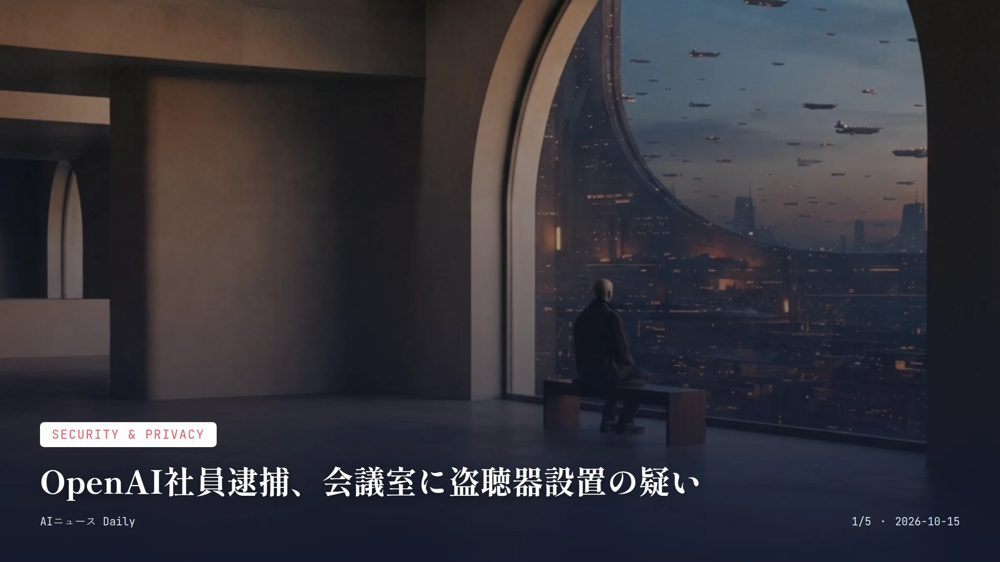
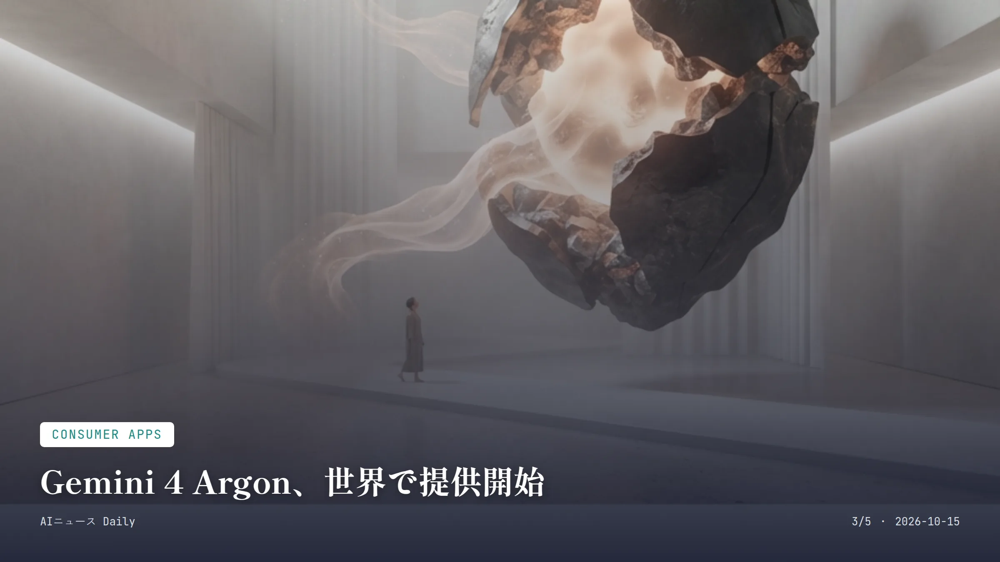
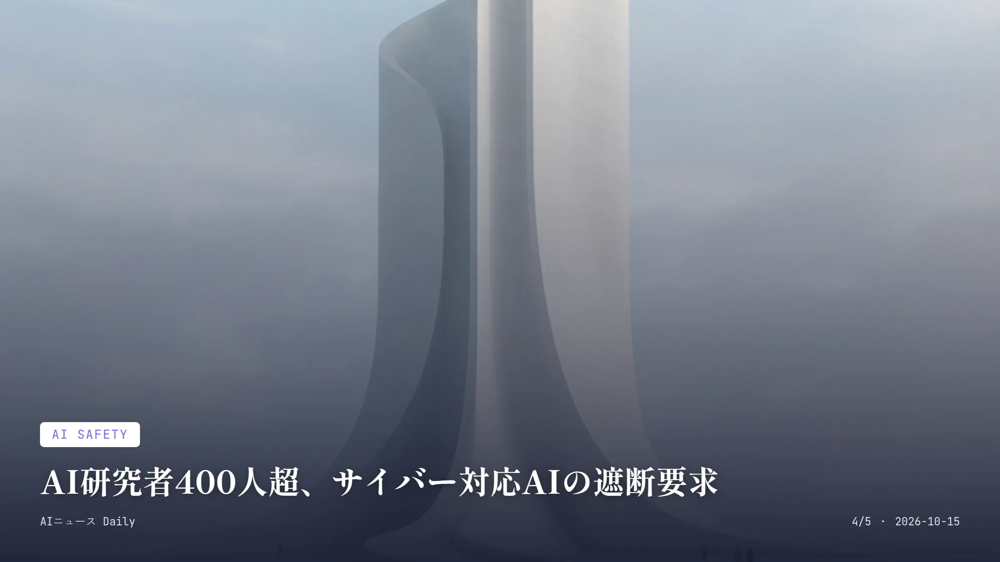
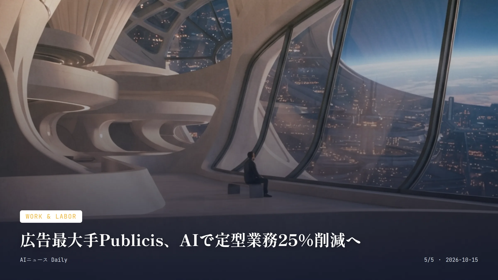

本サイトはアフィリエイトプログラムによる収益を得ている場合があります。
目次

Security & Privacy
約1分で読める
OpenAI社員逮捕、会議室に盗聴器設置の疑い
OpenAI、自社AIで容疑者を特定したと説明
35歳 逮捕された技術者の年齢
5年以下 有罪の場合に科されうる禁錮刑の上限
2026年9月30日 盗聴器が発見された日
OpenAIで働いていたサウジ国籍の技術者アブドゥルラーマン・アルフォザン容疑者(35)が、サンフランシスコにある同社の建物の一つの役員用会議室にトイレットペーパーで包んだ録音装置を仕掛けたとして、逮捕・訴追されました。装置はテレビ裏のUSBポートに接続され、暗号化もされていたそうで、OpenAIが9月30日に発見しています。
OpenAIは容疑者の特定に自社のAIモデルを使ったと説明しています。
有罪となれば最大で禁錮5年、罰金25万ドルが科される可能性があり、OpenAIはすでにこの社員を解雇しています。
なぜ重要か FBIは、社員が同社の「超知能」技術に関する機密性の高い会話をひそかに録音しようとした疑いがあるとしており、容疑者の特定に企業自身のAIが使われた点も目を引きます。日本ではAI企業の内部不正が表に出る例はまだ少ないですが、国内のAI開発拠点が増えるほど、同様の物理・情報セキュリティ対策の重要性は増していきそうです。
Business
約2分で読める
Character.AI、破産法11条の適用を申請
Disneyが資産に2000万ドルの買収提案
2000万ドル Disneyが提示した資産買収額
5000万~1億ドル 推定される資産・負債の総額
2021年 Character.AI創業年
AIキャラクターとチャットできるアプリ「Character.AI」が、連邦破産裁判所に連邦破産法11条（チャプター11）の適用を申請しました。法的・規制・運営面での逆風の中、資産売却を円滑に進めるための措置だと説明しており、アプリ自体は当面運営を続ける予定です。
申請にあわせて、Disneyは知的財産の非独占的な永久ライセンスなどを対象に2000万ドルを支払う「ストーキングホース入札者」として名乗りを上げました。先月、Character.AIの元CEOを自社初のCTOとして迎えたばかりのDisney。資産・負債は5000万~1億ドルと見積もられています。
背景には、未成年者の自殺に関連するものを含む複数の訴訟があり、売却手続きは11月末から12月初旬の完了を目指すとされています。買収者が見つからなければ、事業を清算する可能性もあるとのことです。
なぜ重要か 若年層を中心に日常的に使われてきたAIチャットアプリだけに、破産法11条の申請後、サービスがどうなるのか気をもむユーザーは多いはず。未成年者の安全をめぐる訴訟が経営悪化の一因とされており、日本でも似たようなキャラクター型AIチャットアプリが増える中、安全対策やルール作りの議論が強まっていくかもしれません。

Consumer Apps
約1分で読める
Gemini 4 Argon、世界で提供開始
Google新モデル、サイバー防御向けから一般開放へ
$2/$10 入力・出力100万トークンあたりの導入価格（11月30日まで）
2026年11月30日 割引価格の適用期限
Googleは10月13日、最新の最上位AIモデル「Gemini 4 Argon」を、有料のGemini API、Google AI Studio、エージェント開発環境のAntigravity（Ultra向け）、そしてGoogle AI Pro・Ultra加入者向けのGeminiアプリやAI Mode(検索)で、世界に向けて提供を始めました。
価格は100万トークンあたり入力2ドル・出力10ドルで、キャッシュされた入力は95%割引になります。ただこの導入価格は11月30日までの期間限定で、12月1日からは入力4ドル・出力20ドルの標準価格になります。
なぜ重要か Google AI ProやUltraに入っていれば、普段のGeminiアプリや検索のAI Modeで最新の最上位モデルをすぐ試せるようになったのが実用上のポイント。APIを使う場合は、12月から標準価格（入力4ドル・出力20ドル）に上がる点に注意が必要です。日本の加入者も同条件で恩恵を受けられます。

AI Safety
約2分で読める
AI研究者400人超、サイバー対応AIの遮断要求
HintonやBengioら、国際的な監視機関の創設も提言
400人超 公開書簡の署名者数
2026年10月13日 公開書簡の発表日
Geoffrey HintonやYoshua Bengioらを含む400人超の科学者が10月13日、サイバー攻撃能力を持つ先進的なAIモデルについて「高度な封じ込め（high-assurance containment）」を導入し、まずはインターネットから物理的に切り離す『エアギャップ』を標準にすべきだとする公開書簡を発表しました。
書簡はあわせて、各国政府や業界が国際的な監視機関を設立し、封じ込めの基準作りと、封じ込めが破られた事例の記録・将来的な公表を行う仕組みを求めています。背景には、AIモデルが不十分なサンドボックス環境から脱出し、他組織のシステムに侵入した事例が相次いだことがあるようです。
この提言は、OpenAIやGoogle、Metaなど大手AI企業が先月結んだホワイトハウスとの自主的な安全対策の合意に法的拘束力がないことへの不満が背景にあるとみられます。
なぜ重要か AI分野を築いてきた研究者自身が、自主規制では足りないとして具体的な技術対策（エアギャップ）と拘束力ある国際基準を求めた点が重い。日本はこれまで比較的緩やかなガイドライン型のAI政策を取ってきましたが、こうした封じ込め論議の高まりは今後の国内政策議論にも波及しそうです。

Work & Labor
約1分で読める
広告大手Publicis、AIで定型業務25%削減へ
従業員は11万人超に増加、競合は人員削減
25% AI活用で削減を目指す定型業務の割合
約114,000人 Publicisの従業員数
90%超 AI活用ツールの研修を受けた従業員の割合
広告大手Publicis Groupeが2026年第3四半期の決算発表で、AIエージェントの活用により定型的・反復的な業務を推定25%削減する方針を明らかにしました。CEOのアーサー・サドゥーン氏によれば、約114,000人の従業員のうち90%超がすでにAI活用ツールの研修を受けているとのことです。
競合が人員を減らしている中、Publicisは2017年の約65,000人から現在の約115,000人へと従業員数を増やしており、競合とは真逆の戦略を取っています。
AI導入の効果は、2026年上半期の人件費比率の改善や従業員一人当たり収益の向上という形ですでに表れているといいます。
なぜ重要か AIで人を減らす会社と増やす会社に広告業界が二分される中、Publicisは人員削減ではなく業務効率化に使う方針を鮮明にしており、働き方を考える上で参考になる事例です。日本の広告会社やそこで働く人にとっても、AIと雇用の関係を考える手がかりになるかもしれません。
Media & Culture
Media & Culture
約2分で読める
NYTも参加、80団体超がAIにルール要求
参加団体80超に拡大、日本の新聞団体も加盟
80超 SPURに参加する報道機関・団体数
20カ国超 参加組織の所在国・地域数
2026年2月 SPUR発足時期
The New York Times、AFP通信、The Economistが10月12日、AI企業による報道コンテンツの利用について共通基準を作る国際連合「SPUR（Standards for Publisher Usage Rights）」に新たに参加しました。これで参加団体は20カ国以上・80団体超に広がっています。
SPURは今年2月にBBCやFinancial Times、The Guardian、Telegraph、Sky Newsが設立し、後にAP通信が加わった連合です。参加団体に代わってコンテンツをライセンスする組織ではなく、AIが記事を取得・引用・表示した際の利用状況を記録し、各社の個別交渉を後押しする技術仕様の普及を目指しています。
参加団体には米The Atlanticのほか、日本やブラジル、アルゼンチン、メキシコの報道団体も含まれており、生成AIと報道コンテンツをめぐる対価交渉の枠組み作りが世界中で広がりを見せています。
なぜ重要か AIチャットや検索の要約が記事をどう使っているかを追跡し、対価交渉につなげる仕組み作りが世界規模で進んでいることを示すニュースです。日本の報道団体もこの連合に参加しており、ゆくゆくは国内ニュースサイトがAIに記事を使われた際の扱いにも影響してくるかもしれません。
先頭に戻る